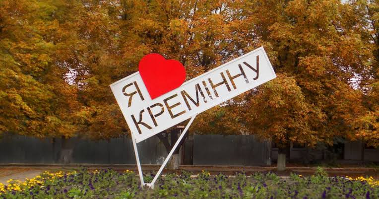
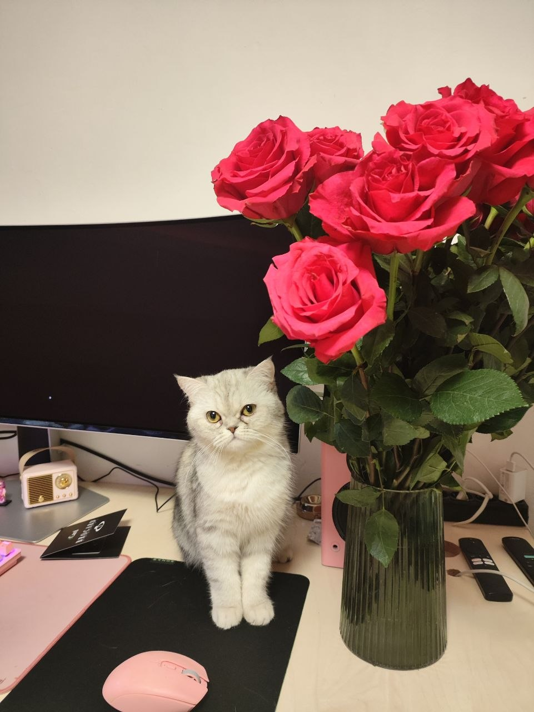
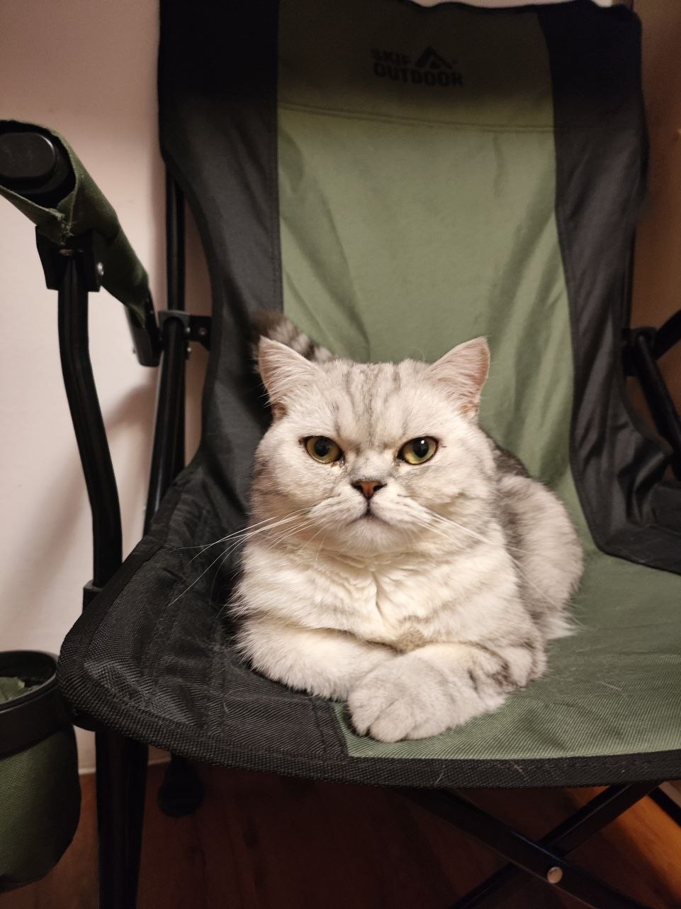

Про мене
Мене звати Ганна, мені 28 років. Я родом із невеликого міста Кремінна Луганської області, яке, на жаль, з 2022 року перебуває в окупації. В 2022 вимушено переїхала в Київ та зараз проживаю тут.

Освіта та професія
За освітою я медична сестра. Навчалася у Кремінському медичному коледжі, де здобула середню спеціальну медичну освіту.
Після закінчення коледжу я вирішила продовжити навчання та вступила до Луганського державного медичного університету, який на той час знаходився в місті Рубіжне Луганської області. Там я навчалася на лікаря. Через декілька років за власним бажанням я покинула університет.
У 2023 році я вступила на курс з інтернет-маркетингу в Hillel. Під час навчання найбільше мене зацікавив напрям SEO, тому після завершення курсу я почала працювати SEO-спеціалістом. Пізніше я також почала займатися контекстною рекламою та працювати ще як PPC-спеціаліст.
Мої хобі
У мене є декілька хобі, яким я із задоволенням присвячую свій вільний час. Одне з них - це велосипед. Я люблю велосипедні прогулянки, адже це чудова можливість активно провести час, відпочити та побувати в нових місцях.
Ще одне моє захоплення - це читання художньої літератури. Серед моїх улюблених книг і книжкових циклів є такі:
- «Зелена миля» письменника Стівен Кінга;
- цикл «Гаррі Поттер» письменниці Джоан Роулінг;
- цикл «Пісня льоду й полум’я» письменника Джордж Р. Р. Мартіна;
- цикл «Відьмак» письменника Анджея Сапковського.
Також я захоплююся відеоіграми. Найбільше мені подобаються сюжетні ігри з відкритим світом, цікавими персонажами та атмосферою. Серед моїх улюблених ігор є такі:
-
Kingdom Come: Deliverance
Гра, події якої відбуваються в середньовічній Богемії. Мені подобається її реалістичний світ, історична атмосфера та цікавий сюжет.
-
Kingdom Come: Deliverance II
Продовження першої частини, яке розвиває історію головного героя та дозволяє ще більше зануритися у світ середньовічної Європи.
-
Red Dead Redemption 2
Пригодницька гра про життя на Дикому Заході. Особливо мені подобаються її великий відкритий світ, деталізація, персонажі та емоційна історія головного героя.
Мої домашні улюбленці
У мене є два котики Котіко та Борис. Вони брат і сестра, але за характером дуже різні.
-

Котіка
Котіка дуже товариська та ласкава кішка. Вона любить увагу людей, із задоволенням грається та проводить час поруч, також любить смачно поїсти та добре поспати.
-

Борис
Борис не дуже любить увагу людей і більше цінує свій особистий простір. Одне з його улюблених занять полювання на комах, а після вдалого полювання любить смачно поїсти та відпочити.